한국사능력검정시험-심화 (2009-10-24 기출문제)
1. 다음 토기들을 제작 시기순으로 바르게 나열한 것은? [2점]
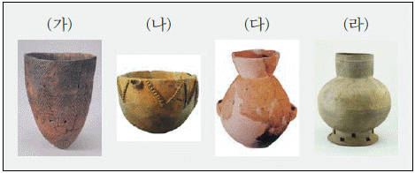
- (가)–(나)–(다)–(라)
- (가)–(라)–(나)–(다)
- (나)–(가)–(다)–(라)
- (다)–(나)–(가)–(라)
- (다)–(나)–(라)–(가)
(정답률: 36%)

2. 고대 한국과 서역의 문화 교류를 보여 주는 유물을 <보기>에서 고른 것은? [1점]
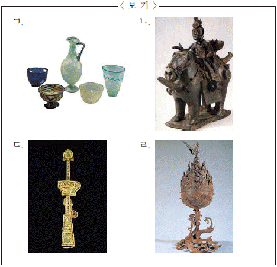
- ㄱ, ㄴ
- ㄱ, ㄷ
- ㄴ, ㄷ
- ㄴ, ㄹ
- ㄷ, ㄹ
(정답률: 51%)
3. 다음 비문 내용의 정복 활동 결과로 나타난 한반도의 정세로 옳은 것을 <보기>에서 고른 것은? [2점]
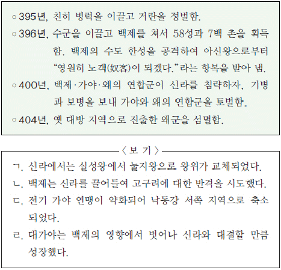
- ㄱ, ㄴ
- ㄱ, ㄷ
- ㄴ, ㄷ
- ㄴ, ㄹ
- ㄷ, ㄹ
(정답률: 44%)
4. 다음 기록의 주인공에 대한 설명으로 옳은 것은? [3점]
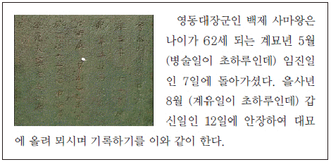
- 살생을 금하는 명령을 내리고 왕흥사를 지었다.
- 수도를 사비로 옮기고 국호를 남부여로 바꾸었다.
- 북위에 표를 올려 고구려를 협공할 것을 요청하였다.
- 신라와 혼인 동맹을 맺어 이찬 비지의 딸을 왕비로 맞이하였다.
- 양나라에 사신을 보내“고구려를 깨뜨려 다시 동이의 강국이 되었다.”라고 천명하였다.
(정답률: 26%)
5. 다음은 삼국 시대에 만들어진 어떤 무덤의 단면도이다. 이양식의 무덤에서 발견된 유물로 옳은 것은? [1점]
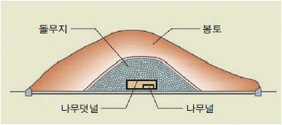
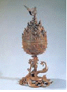
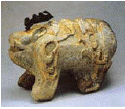
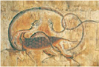
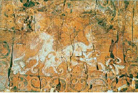
(정답률: 59%)
6. 밑줄 그은 부분에 대한 설명으로 옳지 않은 것은? [2점]
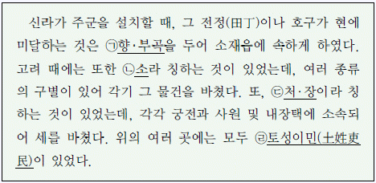
- (ㄱ)의 주민도 일반 군·현민과 마찬가지로 3세(稅)라 불리는 국역을 부담하였다.
- (ㄴ)에서는 광산물이나 수공업품 이외에 해산물 등도 부담하였다.
- (ㄷ)에 거주하는 사람들은 법제상 천인으로 천시되었다.
- (ㄹ)은 군현의 향리와 같은 존재로서 지방의 행정 실무를 담당하였다.
- (ㄱ), (ㄴ)은 조선 시대에 점차 소멸하여 일반 군현으로 편입 되었다.
(정답률: 40%)
7. 밑줄 그은‘이 나라’의 유물로 옳은 것은? [2점]
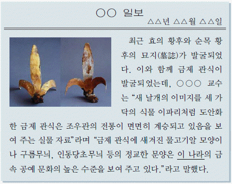
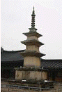
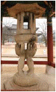
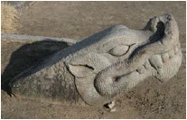
(정답률: 36%)
8. 밑줄 그은 주장을 뒷받침하는 고려 시대 공예품을 <보기>에서 모두 고른 것은? [2점]
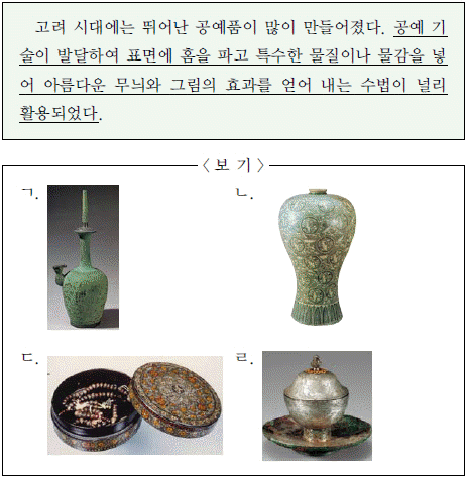
- ㄱ, ㄴ
- ㄱ, ㄷ
- ㄴ, ㄷ
- ㄱ, ㄴ, ㄷ
- ㄴ, ㄷ, ㄹ
(정답률: 25%)
9. 밑줄 그은‘그’에 대한 설명으로 옳은 것은? [2점]
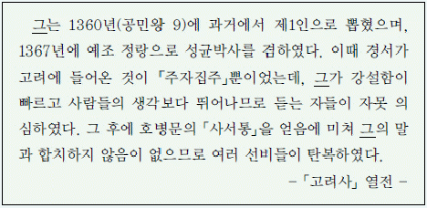
- 만권당에서 원의 학자들과 교유하였다.
- 동방이학(東方??學)의 원조라고 일컬어졌다.
- 「오경천견록」등 경전을 주석한 책을 지었다.
- 자신의 호를 주자와 비슷한 회헌이라 지었다.
- 여러 대에 걸쳐 재상을 지낸 세족 출신이었다.
(정답률: 20%)
10. (가), (나)의 사찰과 관련된 자료를 <보기>에서 옳게 짝지은 것은? [3점]
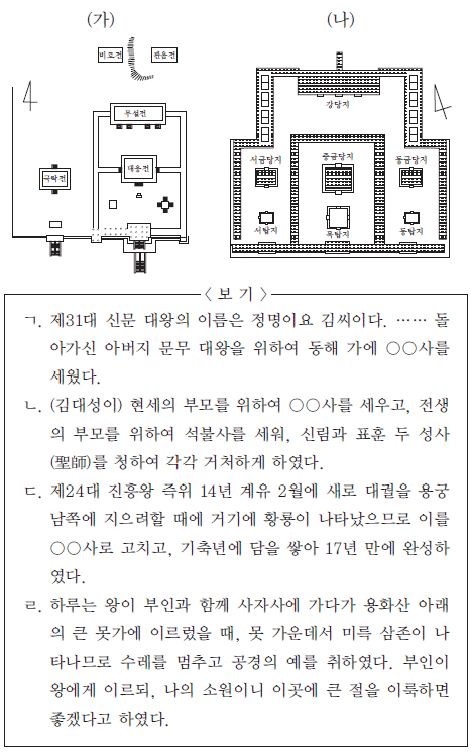
- (가)–ㄱ, (나)–ㄴ
- (가)–ㄱ, (나)–ㄷ
- (가)–ㄴ, (나)–ㄹ
- (가)–ㄷ, (나)–ㄴ
- (가)–ㄷ, (나)–ㄹ
(정답률: 32%)
11. 다음 행사에 해당하는 것은? [2점]
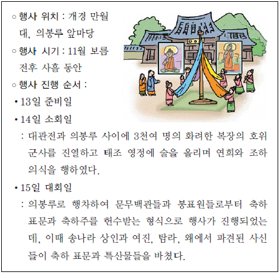
- 초제
- 팔관회
- 연등회
- 점찰법회(占察法會)
- 백고좌회(百高座會)
(정답률: 56%)
12. 다음은 어느 학생의 보고서의 일부이다. <보충 자료>를 첨부할 때에 가장 적절한 곳은? [3점]
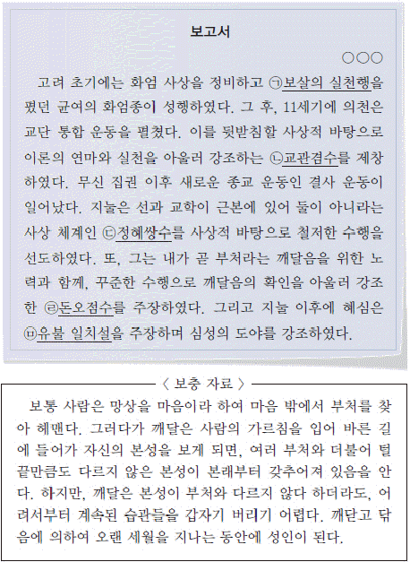
- (ㄱ)
- (ㄴ)
- (ㄷ)
- (ㄹ)
- (ㅁ)
(정답률: 46%)
13. 다음 사진의 책과 관련된 설명으로 옳은 것은? [3점]
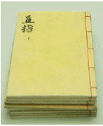
- 1377년, 직지사에서 간행되었다.
- 문헌상으로 전하는 가장 오래된 금속 활자본이다.
- 밀랍 대신 식자판을 조립하는 방법으로 인쇄하였다.
- 현재 이 책의 원본은 국립청주박물관에 보관 중이다.
- 모리스 쿠랑의「조선서지」에 의해 세상에 알려지게 되었다.
(정답률: 18%)
14. 다음 글에서 보이는 친속 의식과 관련된 사회 현상은? [2점]
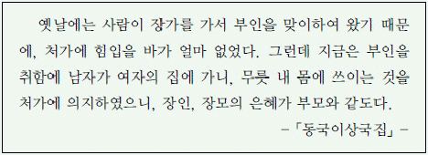
- 부모의 유산은 자녀에게 골고루 분배되었다.
- 아들이 없으면 양자를 두어 가계를 계승하게 하였다.
- 사위와 외손자에게는 음서의 혜택이 주어지지 않았다.
- 족보에 출생 순서와 상관없이 아들을 먼저 기재하였다.
- 이모부는 같은 관청의 소속을 피해야 하는 상피의 대상이 아니었다.
(정답률: 70%)
15. 다음 자료의 내용과 관련된 설명으로 옳은 것은? [3점]
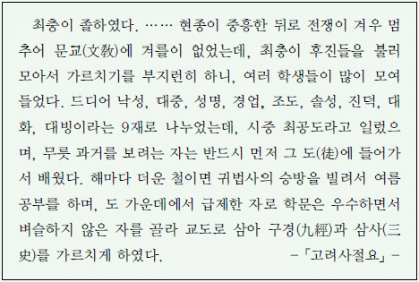
- 시중 최공도는 그의 사후에 홍문공도라고 불렀다.
- 최충이 세운 사학은 무신 정권기에도 존립하였다.
- 사학의 설립자는 모두 과거 장원 급제자들이었다.
- 사학 12도 가운데에서 일부는 서경과 동경에 세워졌다.
- 사학의 발달로 공립 교육 기관인 국자감은 폐지되었다.
(정답률: 35%)
16. 다음 탑이 만들어진 시기의 지배층에 대한 설명으로 옳지 않은 것은? [2점]
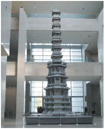
- 재추가 되면 도평의사사의 구성원이 되었다.
- 중국의 영향으로 일부다처제를 일반적으로 받아들였다.
- 권력이나 고리대를 이용하여 대농장을 형성하기도 하였다.
- 중국에 가서 과거에 합격하고 귀국하여 출세하는 자도 있었다.
- 유학에 대한 소양을 가지고 있었지만, 불교를 신봉하기도 하였다
(정답률: 35%)
17. 다음 지도를 보고 추론한 내용으로 적절하지 않은 것은? [2점]
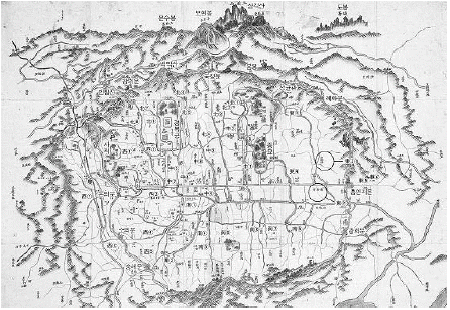
- 경복궁 앞쪽에 6조 거리가 형성되었다.
- 명당수인 한강이 도시를 가로질러 흐르고 있다.
- 정궁인 경복궁 좌우에 종묘와 사직을 배치하였다.
- 최고 교육 기관이었던 성균관에는 문묘가 설치되었다.
- 백악, 낙산, 목멱산, 인왕산을 연결하는 성곽을 쌓았다.
(정답률: 28%)
18. 다음 자료의 조직에 대한 설명으로 옳지 않은 것은? [2점]
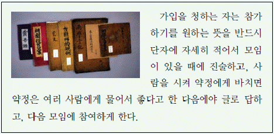
- 지방 사족들이 중심이 되어 조직하였다.
- 기묘사화로 인해 일시 폐지되었다.
- 주민 통제와 교화의 수단으로 이용되었다.
- 조직에 가입된 회원 명단은 그대로 청금록에 기재되었다.
- 율곡 이이는 이것을 시기와 장소에 따라 여러 형태로 변용하여 실시하였다.
(정답률: 23%)
19. 다음 대화가 이루어지는 시기의 경제 상황을 보여 주는 자료로 옳은 것을 <보기>에서 고른 것은? [2점]
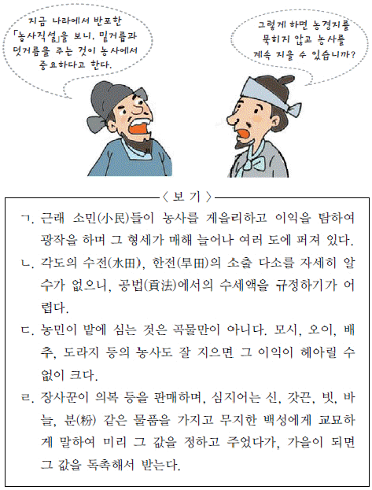
- ㄱ, ㄴ
- ㄱ, ㄷ
- ㄴ, ㄷ
- ㄴ, ㄹ
- ㄷ, ㄹ
(정답률: 22%)
20. 다음 교육 기관에 대한 설명으로 옳은 것은? [2점]
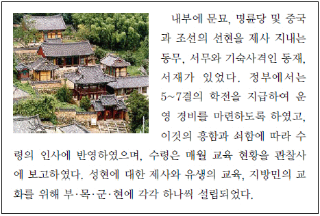
- 중앙에서 교관인 교수나 훈도를 파견하였다.
- 입학 자격은 생원과 진사를 원칙으로 하였다.
- 초등 교육을 담당하는 국립 교육 기관이었다.
- 국가로부터 사액과 함께 서적 등을 받기도 하였다.
- 조선 초기에 처음 설립되어 향촌 사회의 교화에 공헌하였다.
(정답률: 39%)
21. 다음은 국사 시간의 수업 장면이다. 선생님의 질문에 대해 옳게 답한 학생을 고른 것은? [1점]
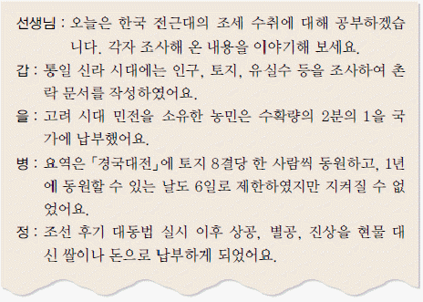
- 갑, 을
- 갑, 병
- 을, 병
- 을, 정
- 병, 정
(정답률: 28%)
22. 다음 주장을 했던 세력에 대한 옳은 설명을 <보기>에서 고른 것은? [2점]
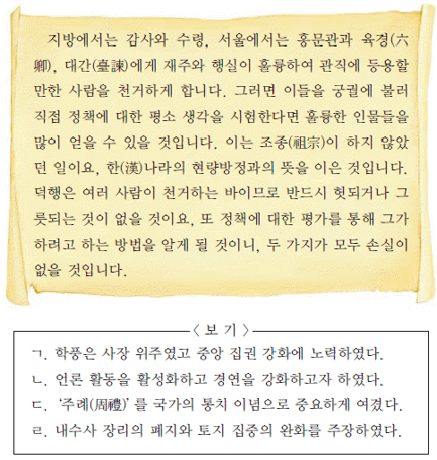
- ㄱ, ㄴ
- ㄱ, ㄷ
- ㄴ, ㄷ
- ㄴ, ㄹ
- ㄷ, ㄹ
(정답률: 20%)
23. 다음 조치와 유사한 목적의 정책을 <보기>에서 고른 것은? [1점]
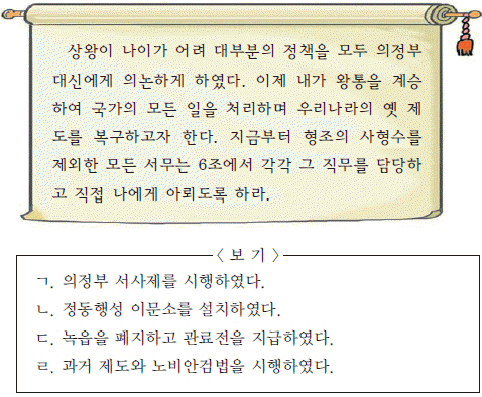
- ㄱ, ㄴ
- ㄱ, ㄷ
- ㄴ, ㄷ
- ㄴ, ㄹ
- ㄷ, ㄹ
(정답률: 46%)
24. 다음은 창덕궁 안내도이다. (가)~(마)에 대한 설명으로 옳지 않은 것은? [3점]
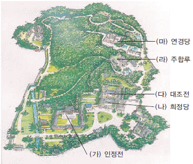
- (가)–창덕궁의 정전으로 조정의 각종 의식이나 외국 사신을 접견하던 곳이다.
- (나)–편전이라고도 하며, 왕이 일상적인 업무를 보던 집무 공간이다.
- (다)–왕비가 거처하는 내전 중에서 가장 으뜸가는 건물이다.
- (라)–정조가 자신의 왕권을 강화하기 위한 기구를 두었다.
- (마)–영조가 자신의 거처로 삼기 위해 지은 양반 저택이다.
(정답률: 25%)
25. 다음 문화유산이 제작된 시기의 문화계 동향에 대한 설명으로 옳지 않은 것은? [2점]
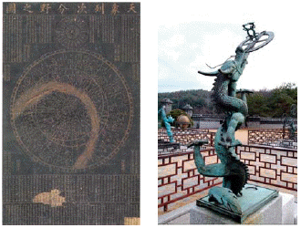
- 민족적이면서도 실용적 학문이 발달하였다.
- 서민이 창작하고 향유하는 문화가 대두하였다.
- 민생 안정을 위해 농업 관련 발명품이 만들어졌다.
- 관학파 계열의 관료와 학자들이 문화계를 주도하였다.
- 국산 약재와 치료 방법을 정리한「향약집성방」을 편찬하였다.
(정답률: 33%)
26. 다음 자료와 관련된 사업에 대한 설명으로 옳지 않은 것은? [2점]
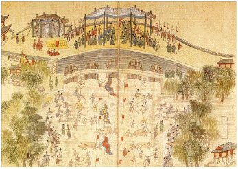
- 이 사업을 실시하기 위하여 준천사를 설치하였다.
- 개천 주변의 물난리를 예방하기 위하여 실시하였다.
- 토양 유실을 막기 위하여 양쪽 제방에 버드나무를 심었다.
- 도성 주민과 지방의 백성들을 강제로 동원하여 진행하였다.
- 도성의 물난리를 예방하기 위하여 내사산의 벌목을 금지시켰다.
(정답률: 44%)
27. 다음 전시과의 개편 내용으로 옳은 것은? [3점]
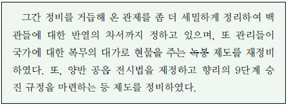
- 전체적으로 토지 분급액이 증가하였다.
- 서리와 군인은 분급 대상에서 제외되었다.
- 현직이 아닌 치사직에도 토지가 지급되었다.
- 4색 공복과 관계가 분급의 주요한 기준이 되었다.
- 무반이 같은 품계의 문반보다 토지 분급액이 많았다.
(정답률: 15%)
28. 개항 이후 면포 생산의 변화 양상을 시대순으로 바르게 나열한 것은? [2점]
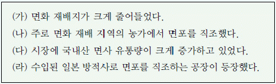
- (가)–(나)–(라)–(다)
- (나)–(다)–(라)–(가)
- (나)–(라)–(다)–(가)
- (다)–(나)–(가)–(라)
- (다)–(나)–(라)–(가)
(정답률: 48%)
29. 다음 자료와 관련된 왕의 정책으로 옳은 것을 <보기>에서 모두 고른 것은? [2점]
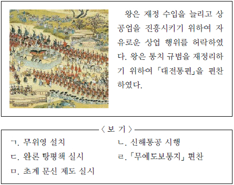
- ㄱ, ㄴ, ㄷ
- ㄱ, ㄷ, ㄹ
- ㄱ, ㄹ, ㅁ
- ㄴ, ㄹ, ㅁ
- ㄴ, ㄷ, ㄹ, ㅁ
(정답률: 39%)
30. (가) 에 들어갈 종교에 대한 설명으로 옳지 않은 것은? [2점]
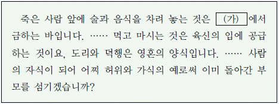
- 우리나라 최초로 영세를 받은 사람은 이승훈이었다.
- 안정복은「천학문답」을 통하여 이 종교를 옹호하였다.
- 17세기 중국을 방문한 사신들에 의하여 처음 소개되었다.
- 안동 김씨의 세도기에 탄압이 완화되면서 활발하게 전파되었다.
- 남인 계열의 일부 실학자들이 서적을 읽고 신앙 생활을하게 되었다.
(정답률: 24%)
31. 다음 지도는 농민 봉기가 일어난 지역을 표시한 것이다. 이 시기 농민들의 가상 대화로 적절한 것을 보기에서 모두 고른 것은? [2점]
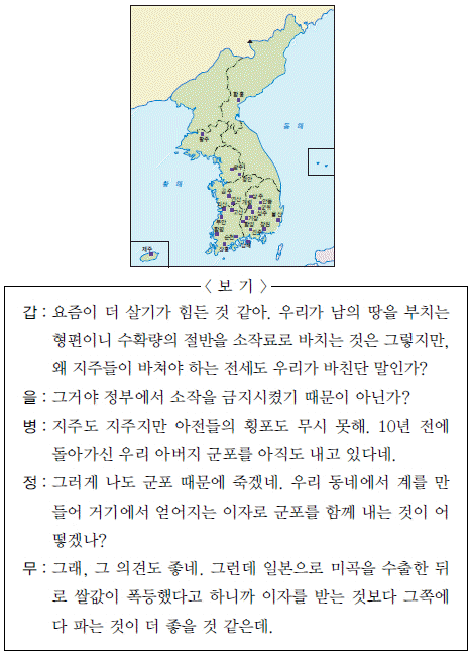
- 갑, 을
- 을, 무
- 갑, 병, 정
- 을, 병, 무
- 병, 정, 무
(정답률: 59%)
32. 다음 자료에 해당하는 국가에 대한 설명으로 옳은 것은? [1점]
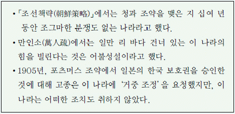
- 1885년에 거문도를 불법 점령하였다.
- 병인양요 당시 외규장각 문서를 약탈하였다.
- 용암포 조차 문제로 일본과의 갈등이 심화되었다.
- 1883년 보빙사 일행이 이 나라에 국서를 전달하였다.
- 이 나라의 부영사 부들러는 조선 중립화론을 제기하였다.
(정답률: 60%)
33. 다음 그림은 특정 질병과 관련된 것이다. 이 질병과 관련이 없는 것은? [3점]
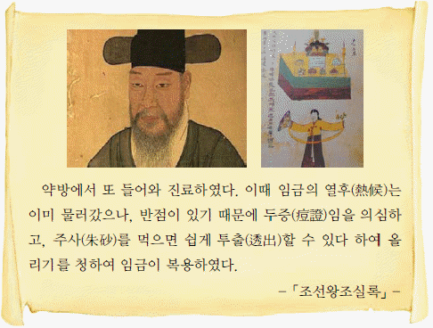
- 이 병의 퇴치를 위해 민간에서는 배송굿을 벌였다.
- 이 질병 환자가 우리나라에서 처음 나타난 것은 18세기 후반이다.
- 정약용은 이 질병에 관한 이론을 집대성한「마과회통」을 저술하였다.
- 이 병이 유행하면 그 창궐을 막기 위해 제사를 지내지 않는 경우도 있었다.
- 왕이나 왕세자가 이 병에서 회복하면, 이를 기념하는 경과(慶科)를 거행하기도 하였다.
(정답률: 35%)
34. 다음 예술 분야에 대한 설명으로 옳은 것을 <보기>에서 모두 고른 것은? [2점]
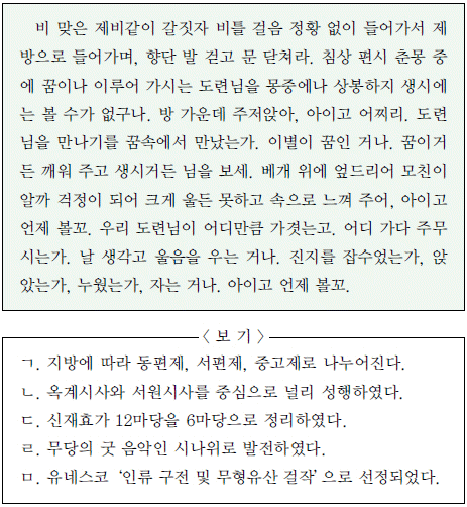
- ㄱ, ㄴ
- ㄱ, ㄷ
- ㄱ, ㄷ, ㅁ
- ㄴ, ㄷ, ㄹ
- ㄷ, ㄹ, ㅁ
(정답률: 41%)
35. 지도는 어떤 사건의 경과를 표시한 것이다. 이 사건에 대한 설명으로 옳지 않은 것은? [1점]
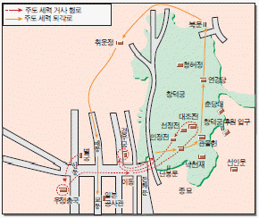
- 사건을 일으킨 주모자 대부분은 일본에 망명하였다.
- 사건 이후 청은 조선에 대한 지배력을 더욱 강화하였다.
- 사건의 주도 세력은 국왕 중심의 정치 체제 강화를 지향하였다.
- 청군이 사건을 진압하는 과정에서 한성 부민들이 일본 공사관을 공격하였다.
- 청·프 전쟁으로 인해 조선에 주둔해 있던 청군의 일부가 철수한 것을 배경으로 발생하였다.
(정답률: 44%)
36. 다음 설명에 해당하는 화폐는? [2점](오류 신고가 접수된 문제입니다. 반드시 정답과 해설을 확인하시기 바랍니다.)
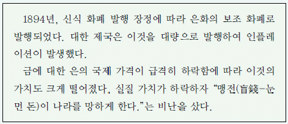
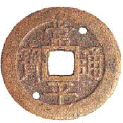
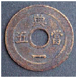
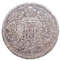
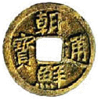
(정답률: 26%)
37. 한 인물에 대한 설명이다. 그가 역임한 관직의 기관에 대한 설명으로 옳지 않은 것은? [1점]
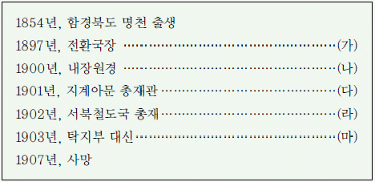
- (가)–1883년에 설치되었던 상설 조폐 기관
- (나)–1883년에 보상·부상을 통괄 관리하고 외국 상인의 침투를 막기 위해 설치한 기관
- (다)–대한 제국 때 전토문권(田土文券)을 관장한 관청
- (라)–1902년, 서울과 신의주 사이에 경의선을 부설하기 위하여 궁내부에 설치한 관서
- (마)–조선 말기와 대한 제국 시기에 국가 재무를 총괄한 중앙 행정 부서
(정답률: 41%)
38. 다음 자료의 사건에 대한 설명으로 옳은 것을 <보기>에서 모두 고른 것은? [2점]
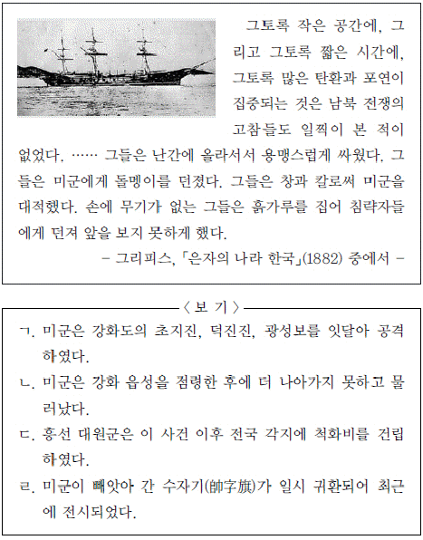
- ㄱ, ㄴ
- ㄱ, ㄷ
- ㄴ, ㄷ
- ㄱ, ㄷ, ㄹ
- ㄴ, ㄷ, ㄹ
(정답률: 50%)
39. 자료의 사건에 대한 설명으로 옳지 않은 것은? [2점]
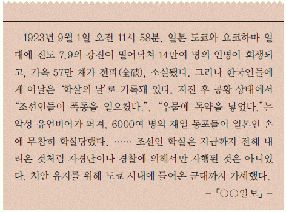
- 당시「동아일보」와「조선일보」가 이 사건을 보도하여 국내에 큰 반향을 불러일으켰다.
- 지진이 발생했을 때 일본 군대와 민간인들이 조선인 대학살을 자행하였다.
- 당시 일본에서는 노동자 계급의 성장, 쌀 소동, 공산당의 성립에 따른 혼란이 격화되었다.
- 대지진이 발생하자, 일본 정부는 일본 국민의 보수적 감정을 이용하여 이 위기를 무마하고자 하였다.
- 대학살 이후 일부 자경단원은 형식적으로 재판에 회부되기도 했으나, 증거 불충분이라는 이유로 모두 석방되었다.
(정답률: 29%)
40. 조선 시대와 1920~1930년대 서울 가로망의 변화를 보여 주는 그림이다. 이러한 변화에 대한 설명으로 옳지 않은 것은? [2점]
- 통감부 시기부터 행해진 도성 해체 등에 따라 도시 구조는 기반부터 변화되었다.
- 시구 개정 사업은 굽은 중심부 도로의 직선화, 도로 폭의 확대와 일부 도로의 신설 사업이었다.
- 총독부의 시가지 건축 규제 규칙은 가로 건물의 크기, 형태를 제한하는 법적인 근거였다.
- 시구 개정 사업 결과 서울 중심부의 가로가 정(丁)자형의 구조에서 남북 도로축 중심으로 변화하였다.
- 남북 도로망의 개발로 남촌은 일본인의 상업 중심지로, 북촌은 일본인의 주거 지역으로 변모하였다
(정답률: 30%)
41. 만화의 배경이 되는 사건은? [1점]
- 만주 사변
- 6·25 전쟁
- 중·일 전쟁
- 청·일 전쟁
- 베트남 전쟁
(정답률: 42%)
42. 다음 신문 자료에 제시된 민족 운동에 대한 설명으로 옳지 않은 것은? [2점]
- ‘일본 상품 배척’을 슬로건으로 내세웠기 때문에 초기부터 일제의 탄압을 받았다.
- 한말의 국채 보상 운동과 맥락을 같이하는 것으로 1920년에 조만식이 평양에서 시작했다.
- 시간이 갈수록 일제와 타협하는 민족 개량주의 성격이 드러나 점차 대중의 외면을 받게 되었다.
- 운동의 전개 과정에서 생필품의 가격이 치솟아 상인이나 자본가에게 이익이 집중되는 현상이 나타났다.
- “민족의 경제적 파탄을 구제하려면 외화를 배척하고 불편하나마 국산품을 사용해야 한다.”는 취지로 일어났다.
(정답률: 23%)
43. 다음 지도에 표시된 철도에 대한 설명으로 옳지 않은 것은? [3점]
- 러시아는 일본의 요동 반도 점령을 막은 대가로 청나라와 협상해 (ㄱ)의 부설권을 얻었다.
- 러·일 전쟁의 결과, 일본이 러시아로부터 (ㄴ)의 부설권을 이양받았다.
- 간도 협약의 결과, 일본이 (ㄷ)의 부설권을 획득하였다.
- (ㄹ)의 부설권을 획득했던 프랑스가 러·일 전쟁 중 일본에 권리를 양도하였다.
- (ㅁ)은 우리나라에서 경인선에 이어 두 번째로 개통되었으며, 19⑤년부터 운행되었다.
(정답률: 26%)
44. 2009년 유네스코에서 선정한 우리나라 세계 무형유산을 모두 고른 것은? [2점]
- (가), (나), (다), (라)
- (가), (나), (다), (마)
- (가), (나), (라), (마)
- (나), (다), (라), (마)
- (가), (나), (다), (라), (마)
(정답률: 14%)
45. 다음은 일제 강점기 어느 학교 개교식 참관기의 일부이다. 이 학교에 대한 설명으로 옳은 것은? [2점]
- 1930년대 우리 역사와 우리말을 연구하는 조선학 운동의 중심지가 되었다.
- 일제가 민립 대학 설립 운동에 찬성하여 학교의 설립이 이루어질 수 있었다.
- 일제 강점기 최초로 설립된 대학으로 졸업생의 다수가 관료로 사회에 진출하였다.
- 미국 북감리교 선교사인 아펜젤러에 의해 설립된 학교로, 주시경과 이승만을 배출하였다.
- 교육 구국의 이념 아래 설립한 학교로 한국인에 의해 설립된 최초의 근대적 고등 교육 기관이었다.
(정답률: 46%)
46. 다음 일제 강점기의 정책에 대한 설명으로 옳은 것은? [2점]
- 소작 조정령을 제정하여 소작인에게 조정 신청권을 부여하였다.
- 산미 증식 계획을 통해 미곡 생산량의 획기적인 증대를 꾀하고자 하였다.
- 토지 조사 사업을 실시하여 근대적인 토지 소유권 관계를 설정하고자 하였다.
- 수리 조합령을 제정하여 미곡 생산이 안정적으로 유지될 수 있도록 노력하였다.
- 국가 총동원법을 제정하여 전쟁에 필요한 인적, 물적 자원을 동원하고자 하였다.
(정답률: 15%)
47. 다음은 1930년대 후반 중국에서 발표된 어느 단체의 창립 선언문이다. 이 단체에 대한 옳은 설명을 <보기>에서 고른것은? [3점]
- ㄱ, ㄴ
- ㄱ, ㄷ
- ㄴ, ㄷ
- ㄴ, ㄹ
- ㄷ, ㄹ
(정답률: 35%)
48. 시간의 흐름으로 볼 때, (가)에 들어갈 사건으로 옳은 것은? [2점]
- 박정희와 일부 육사 출신 장교들에 의해 군사 정변이 일어났다.
- 박정희 정권은 평화 통일과 국민 총화를 명분으로 유신체제를 선포했다.
- 한국은 북방 외교를 적극적으로 추진해 소련·중국 등과 수교 관계를 수립했다.
- 미국은 카터의‘인권 외교’를 철회하고, 동아시아에서의 반소 블록을 강화하였다.
- 미국 선박 푸에블로호가 북한 해군에 의하여 원산 앞바다에서 납치되었다.
(정답률: 18%)
49. 다음 교과서가 발간된 시기의 교육계 상황으로 옳지 않은 것은? [1점]
- 6·3·3 학제가 처음 도입되었다.
- ‘전시하 교육 특별 조치 요강’이 공포되었다.
- 노천이나 가건물에서도 수업이 진행되었다.
- 피난 학급이 설치되고 피난 학교가 개설되었다.
- 교육 자치제가 시작되어 의무 교육을 적극 추진하였다.
(정답률: 25%)
50. 자료의 내용과 관련되어 나타난 사회 현상으로 옳지 않은 것은? [1점]
- 수령권의 강화로 지방 향리들의 세력이 점차 약화되어 갔다.
- 부농층의 향임직 진출로 향촌 사회에서 향전이 벌어지기도 하였다.
- 서얼은 통청 운동을 벌여 관직 진출의 제한을 없애 줄 것을 요구하였다.
- 서민들은 족보를 위조하거나 납속을 통하여 신분 상승을 꾀하기도 하였다.
- 민간 사회에는 미륵 신앙이나 정감록 등과 관련된 예언사상이 유행하였다.
(정답률: 51%)